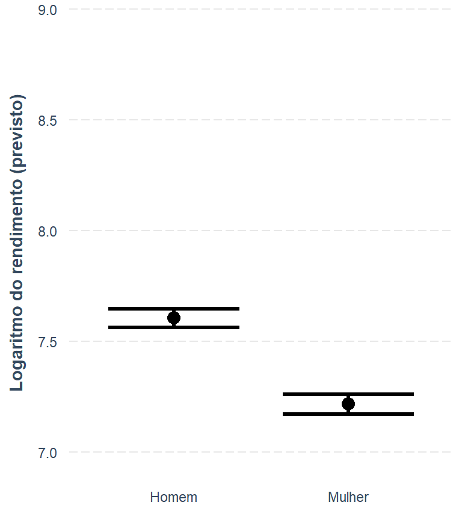
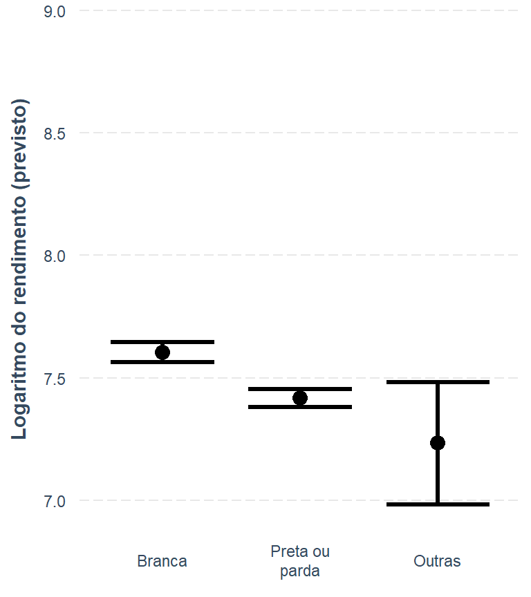
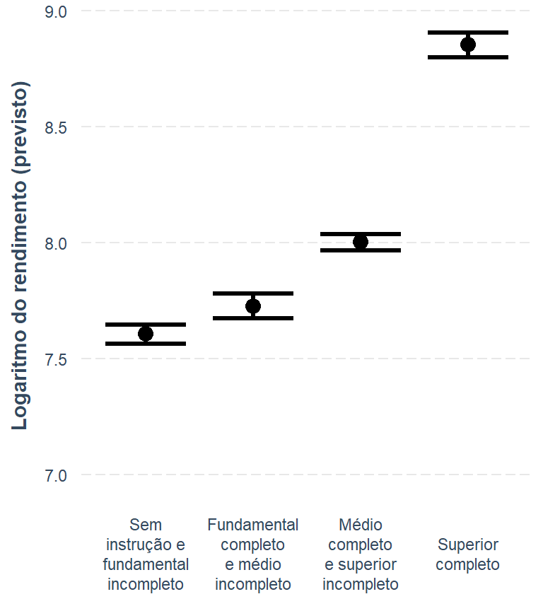

# Linhas do relatório da seção 1 até o fim da seção 5
linhas <- readLines('relatorio.qmd', encoding = 'UTF-8')
inicio <- grep('^## 1\\. ', linhas)[1]
fim <- grep('^## 6\\. ', linhas)[1] - 1
# Executa esse trecho como parte desta página, descartando o texto gerado
invisible(knitr::knit_child(text = linhas[inicio:fim], quiet = TRUE))Dia 2: dos dados às conclusões
3 horas · da incerteza das estimativas ao relatório atualizado
O segundo dia acrescenta a incerteza às estimativas e reproduz todo o relatório, permitindo alterar o ano, o trimestre e as UFs.
Programa
| Bloco | Conteúdo |
|---|---|
| Retomada | Revisão do Dia 1 e dúvidas |
| 6. O desenho amostral com srvyr | Leitura do desenho calibrado, intervalo de confiança e CV, comparação entre dplyr e srvyr |
| 7. Reproduzindo o relatório | Taxa, média, razão e distribuição |
| Intervalo | |
| 8. Comparar com rigor | Recortes territoriais, semáforo de CV, testes de hipóteses e regressão com svyglm |
| 9. Atividade: um indicador novo | Em duplas, com a ficha do indicador |
| Encerramento | O relatório para outro trimestre ou outra UF |
Ponto de partida
O Dia 2 continua de onde o Dia 1 parou. O bloco abaixo roda, sem mostrar a saída, o código das seções 1 a 5 do relatório: parâmetros, pacotes, leitura da base, recodificação e estimativas com o dplyr.
6. O desenho amostral
O bloco 5 calculou as estimativas pontuais com o dplyr. Este bloco responde à pergunta que ficou em aberto: o quão preciso é cada número? Para isso, é preciso dizer ao R como a amostra da PNAD Contínua foi sorteada.
Por que o desenho importa
A PNAD Contínua não sorteia pessoas uma a uma. A amostra é selecionada em etapas:
- Estratos: o país é dividido em estratos geográficos, e cada estrato tem a sua própria amostra.
- Unidades primárias de amostragem (UPA): dentro de cada estrato, são sorteados setores censitários.
- Domicílios: dentro de cada UPA, são sorteados domicílios, e todos os moradores são entrevistados.
Pessoas da mesma UPA e do mesmo domicílio tendem a ser parecidas entre si: moram perto, têm renda próxima, dividem as tarefas da casa. Por isso, cada pessoa entrevistada traz menos informação nova do que traria numa amostra sorteada pessoa a pessoa. Ignorar essa estrutura faz o erro-padrão parecer menor do que é, e a estimativa parecer mais precisa do que é.
O pacote srvyr guarda essa estrutura num objeto de desenho amostral, e calcula as estimativas e as medidas de precisão levando-a em conta.
O desenho com a calibração refeita
O desenho deste relatório parte do peso sem calibração (V1027), declara os dois estágios de seleção (UPA e ID_DOMICILIO) e os estratos (Estrato), e refaz a calibração pelas projeções de população: por domínio geográfico (posest, com os totais de V1029) e por sexo e idade (posest_sxi, com os totais de V1033). É o que faz a função pnadc_design(), do pacote PNADcIBGE. A calibração faz os totais estimados baterem com as projeções e reduz a variância das estimativas.
Criar esse desenho leva alguns minutos, porque a calibração é refeita para as 521.730 pessoas da amostra. Por isso, ele é criado uma única vez, gravado num arquivo .rds e publicado no Zenodo junto com a base. Em sala, o desenho é só lido.
DicaUm atalho: o desenho direto do
get_pnadc()
O pacote PNADcIBGE consegue ir dos microdados ao desenho num passo só. O argumento design do get_pnadc() vale TRUE por padrão: a função baixa os dados e já devolve o desenho amostral pronto. No bloco 3, este relatório usou design = FALSE de propósito.
%%{init: {"flowchart": {"rankSpacing": 35, "nodeSpacing": 25}}}%%
flowchart LR
A["get_pnadc()<br>design = FALSE"] --> B["Data frame<br>+ variáveis do bloco 4"]
B --> D["pnadc_design()"]
D --> F["Desenho amostral<br>EP, IC e CV"]
E["get_pnadc()<br>design = TRUE (padrão)"] --> F
classDef curso fill:#ece9f5,stroke:#5b4a9b,color:#2e2550
classDef atalho fill:#fdeee4,stroke:#e8793a,color:#6b3412
class A,B,D curso
class E atalho
O relatório segue o caminho mais longo por dois motivos:
- o bloco 5 calcula as estimativas com o
dplyr, que trabalha com um data frame, não com um desenho; - em sala, a base e o desenho são só lidos, sem baixar os microdados.
No atalho, o desenho também sai de outro jeito. O get_pnadc() sempre traz os 200 pesos replicados e, com eles na base, o desenho usa o bootstrap, como o IBGE, e não a linearização de Taylor deste relatório (veja a caixa “Um erro-padrão um pouco diferente do divulgado pelo IBGE”, mais abaixo). As estimativas são as mesmas, os erros-padrão podem ficar um pouco diferentes, e cada estimativa leva mais tempo. Com o desenho convertido pelo as_survey(), do srvyr, as variáveis novas também podem ser criadas com mutate() direto no desenho:
desenho_direto <- get_pnadc(
year = ano,
quarter = trimestre,
vars = vars_curso,
labels = FALSE # design = TRUE é o padrão
) |>
as_survey() |>
mutate(mulher = if_else(V2007 == 2, 1, 0))# Executado só com gerar_base: true, depois das variáveis do bloco 4.
# O if protege quem roda o bloco pelo play do RStudio, que ignora o eval.
if (params$gerar_base) {
# O pnadc_design() escolhe o método pelas colunas da base: com os pesos
# replicados (V1028001 a V1028200), usa bootstrap; sem eles, refaz a
# calibração e usa linearização de Taylor, que é o que queremos aqui
if (any(str_detect(names(pnadc), '^V1028[0-9]{3}$'))) {
stop('A base tem pesos replicados: o pnadc_design() usaria bootstrap. ',
'Gere o desenho a partir da base sem as réplicas.', call. = FALSE)
}
desenho_calibrado <- pnadc |>
mutate(
ocupada = if_else(condicao_atividade %in% 'Ocupada', 1, 0),
desocupada = if_else(condicao_atividade %in% 'Desocupada', 1, 0),
forca_trabalho = ocupada + desocupada,
idade_15_mais = if_else(V2009 >= 15, 1, 0)
) |>
PNADcIBGE::pnadc_design()
saveRDS(desenho_calibrado, arquivo_desenho)
}
AvisoO desenho guarda as variáveis do bloco 4
O arquivo do desenho é gravado depois do bloco 4 e leva junto as variáveis derivadas (sexo, cor ou raça, condição de atividade, informalidade e as demais) e as dummies acima. Se o código do bloco 4 mudar, o desenho precisa ser gerado de novo, com gerar_base: true.
# Opções que o pnadc_design() liga ao criar o desenho. Elas valem só para
# a sessão do R e não vão junto no .rds: por isso, são ligadas de novo aqui.
# Estrato com uma só UPA (no total ou num recorte): a variância é calculada
# em torno da média geral, em vez de dar erro
options(survey.lonely.psu = 'adjust')
options(survey.adjust.domain.lonely = TRUE)
# Arquivo local, se existir; senão, o link do Zenodo
desenho <- localiza_arquivo(arquivo_desenho, params$url_desenho) |>
readRDS() |>
as_survey() # converte o objeto do pacote survey para usar com o srvyr
NotaUm erro-padrão um pouco diferente do divulgado pelo IBGE
Desde o 3º trimestre de 2021, o IBGE calcula a precisão das estimativas da PNAD Contínua pelo método de replicação bootstrap, com 200 pesos replicados. Este relatório refaz a calibração e calcula a variância pelo método do Conglomerado Primário com linearização de Taylor, que o IBGE usava até então. Os dois métodos estimam a mesma variância por caminhos diferentes, e por isso os erros-padrão, os intervalos de confiança e os coeficientes de variação daqui podem ficar um pouco diferentes dos divulgados, como o próprio IBGE avisa na Nota técnica 04/2021 da PNAD Contínua. Essa diferença não é um erro. As estimativas pontuais são idênticas.
A mesma taxa, agora com a precisão
A taxa de participação na força de trabalho do bloco 5, calculada agora no desenho. O survey_mean() de uma dummy é a sua média ponderada, ou seja, a taxa. Junto com ela, o srvyr devolve:
- o erro-padrão (EP): o tamanho típico do erro da estimativa, por ela vir de uma amostra;
- o intervalo de confiança de 95% (IC): a faixa de valores que, em 95% das amostras possíveis, conteria o valor da população;
- o coeficiente de variação (CV): o erro-padrão como porcentagem da estimativa. Ele permite comparar a precisão de estimativas de tamanhos diferentes.
Nas taxas, o survey_mean() usa sempre proportion = TRUE. A opção não muda a estimativa nem o erro-padrão, só o intervalo de confiança. Sem ela, o IC é simétrico (a taxa mais ou menos 1,96 erro-padrão) e pode passar de 0% ou de 100% quando a taxa está perto desses limites ou quando a amostra do recorte é pequena. Com ela, o IC é calculado na escala logit, \(\log\left(\frac{p}{1 - p}\right)\), e depois convertido de volta: fica sempre entre 0% e 100% e é assimétrico perto dos extremos, o que dá uma cobertura mais próxima dos 95% anunciados.
O prop_method = 'xlogit' escolhe como fazer essa conta: a partir da taxa \(p\) e do seu erro-padrão \(EP\), os limites do intervalo são
\[ \text{logit}^{-1}\left(\log\frac{p}{1 - p} \pm 1{,}96 \, \frac{EP}{p \, (1 - p)}\right) \]
O método padrão do srvyr ('logit') chega ao mesmo intervalo ajustando uma regressão logística em cada grupo. Com o desenho calibrado, essa regressão às vezes não converge num recorte pequeno, e a taxa sai igual a zero sem nenhum erro. O 'xlogit' não ajusta regressão, por isso não tem esse problema, e ainda é mais rápido.
Para as UFs, o recorte é feito no desenho, e não na base. A base empilhada do bloco 5 não serve aqui: nela, as pessoas das UFs escolhidas aparecem duas vezes, e o desenho as contaria em dobro.
No desenho, cada UF é um domínio. Um filter() no desenho não apaga as pessoas de fora: elas continuam lá, com peso zero, porque o erro-padrão depende de toda a amostra (estratos e UPAs). Por isso, um filter() seguido de group_by(UF) ainda cria um grupo para cada UF do país, e os grupos sem peso dão erro. O código junta as UFs que não estão na lista num só domínio (com a UF igual a NA), estima tudo de uma vez e descarta esse domínio no fim.
# Estimativa com erro-padrão, intervalo de confiança e CV, por sexo
estima_participacao <- function(desenho) {
desenho |>
filter(V2009 >= 15) |>
group_by(sexo, .add = TRUE) |>
summarise(
taxa = survey_mean(
forca_trabalho,
vartype = c('se', 'ci', 'cv'),
proportion = TRUE, # IC pela escala logit, sempre entre 0 e 1
prop_method = 'xlogit' # logit calculado direto da média e do EP
)
)
}
participacao_desenho <- bind_rows(
desenho |>
estima_participacao() |>
mutate(recorte = 'Brasil'),
desenho |>
# UFs fora da lista viram um só domínio (NA), descartado no inner_join
mutate(UF = if_else(UF %in% ufs_escolhidas$UF, UF, NA)) |>
group_by(UF) |>
estima_participacao() |>
inner_join(ufs_escolhidas, by = 'UF') |>
mutate(recorte = nome_uf)
) |>
mutate(
recorte = factor(recorte, levels = levels(pnadc_recortes$recorte)),
# Taxa, erro-padrão, limites do IC e CV passam para %
across(starts_with('taxa'), \(valor) valor * 100)
) |>
select(recorte, sexo, starts_with('taxa'))participacao_desenho |>
# A taxa calculada com o dplyr no bloco 5, para comparar
left_join(
participacao |> select(recorte, sexo, com_peso),
by = c('recorte', 'sexo')
) |>
arrange(recorte, sexo) |>
select(
recorte, sexo, com_peso, taxa, taxa_se, taxa_low, taxa_upp, taxa_cv
) |>
knitr::kable(
digits = c(0, 0, 1, 1, 2, 1, 1, 2),
format.args = list(decimal.mark = ','),
col.names = c(
'Recorte', 'Sexo', 'Taxa com dplyr (%)', 'Taxa com srvyr (%)',
'EP (p.p.)', 'IC 95%: inferior', 'IC 95%: superior', 'CV (%)'
)
)| Recorte | Sexo | Taxa com dplyr (%) | Taxa com srvyr (%) | EP (p.p.) | IC 95%: inferior | IC 95%: superior | CV (%) |
|---|---|---|---|---|---|---|---|
| Brasil | Homem | 73,5 | 73,5 | 0,12 | 73,2 | 73,7 | 0,16 |
| Brasil | Mulher | 53,4 | 53,4 | 0,14 | 53,1 | 53,7 | 0,26 |
| Rio de Janeiro | Homem | 72,9 | 72,9 | 0,50 | 71,9 | 73,8 | 0,68 |
| Rio de Janeiro | Mulher | 52,7 | 52,7 | 0,64 | 51,4 | 53,9 | 1,22 |
As colunas “Taxa com dplyr” e “Taxa com srvyr” são iguais: as estimativas pontuais calculadas usando o dplyr já acertavam. O que o desenho acrescenta são as outras colunas. Na UF, a amostra é menor, e o erro-padrão e o CV são maiores que os do Brasil.
A taxa como razão
Na seção “Os estimadores”, a taxa foi escrita como a razão entre dois totais: o total de pessoas do numerador e o total de pessoas do denominador. O survey_ratio() calcula exatamente essa razão, com as dummies do numerador e do denominador, sem precisar de filter():
desenho |>
group_by(sexo) |>
summarise(
taxa = survey_ratio(
numerator = forca_trabalho * idade_15_mais, # numerador: N
denominator = idade_15_mais, # denominador: D
vartype = c('se', 'cv')
)
) |>
mutate(across(starts_with('taxa'), \(valor) valor * 100)) |>
knitr::kable(
digits = c(0, 1, 2, 2),
format.args = list(decimal.mark = ','),
col.names = c('Sexo', 'Taxa (%)', 'EP (p.p.)', 'CV (%)')
)| Sexo | Taxa (%) | EP (p.p.) | CV (%) |
|---|---|---|---|
| Homem | 73,5 | 0,12 | 0,16 |
| Mulher | 53,4 | 0,14 | 0,26 |
O resultado é o mesmo da tabela anterior para o Brasil, inclusive o erro-padrão. Calcular uma taxa num grupo da população é calcular uma razão: as duas formas são equivalentes.
Os intervalos de confiança no gráfico
O gráfico mostra cada taxa como um ponto, e o intervalo de confiança como uma linha horizontal em torno dele. Intervalos mais longos indicam estimativas menos precisas.
grafico_ic <- participacao_desenho |>
mutate(
recorte = factor(recorte, levels = rev(levels(recorte))),
unidade = '%',
texto = paste0(
recorte, '<br>', sexo, ': ', formata_valor(taxa, unidade), '%',
'<br>IC 95%: ', formata_valor(taxa_low, unidade), '% a ',
formata_valor(taxa_upp, unidade), '%'
)
) |>
# group: Homem em cima e Mulher embaixo, na ordem da legenda
ggplot(aes(
x = taxa, xmin = taxa_low, xmax = taxa_upp, y = recorte,
colour = sexo, text = texto,
group = factor(sexo, levels = c('Mulher', 'Homem'))
)) +
# Intervalo como uma linha com barrinhas nas pontas, e a taxa como um ponto
geom_errorbar(
orientation = 'y', width = 0.2, position = position_dodge(width = 0.5)
) +
geom_point(size = 2.5, position = position_dodge(width = 0.5)) +
scale_colour_manual(values = cores_sexo) +
labs(x = 'Taxa de participação (%)', y = NULL, colour = NULL) +
theme_minimal() +
theme(panel.grid.major.y = element_blank())
ggplotly(grafico_ic, tooltip = 'text') |>
layout(legend = legenda_topo) |>
config(displayModeBar = FALSE)7. Os indicadores com precisão
O bloco 5 calculou todos os indicadores com o dplyr, e o bloco 6 mostrou como medir a precisão de um deles. Este bloco refaz no desenho amostral os indicadores do núcleo do curso, um para cada tipo de estimador da seção “Os estimadores”:
| Estimador | Indicador |
|---|---|
| Taxa | Taxa de desocupação (1.10) e informalidade no trabalho não agrícola (1.9) |
| Média | Horas habitualmente trabalhadas por semana, pessoas ocupadas |
| Razão | Razão entre o rendimento médio das mulheres e o dos homens (1.13), também por grupo ocupacional |
| Distribuição | Nível de instrução da população de 25 anos ou mais (2.11) |
NotaPor que só o núcleo
Cada estimativa no desenho leva de alguns segundos a algumas dezenas de segundos, porque o erro-padrão é calculado com as 521.730 pessoas da amostra e com a calibração. Calcular os 29 indicadores do bloco 5 dessa forma deixaria o relatório lento. Os demais indicadores podem ser calculados com as mesmas funções, quando a precisão deles for necessária.
Funções para os recortes
O bloco 6 estimou a taxa de participação para o Brasil e, separadamente, para as UFs escolhidas, tratando as UFs como domínios. A função por_recorte() guarda esse procedimento para qualquer estimativa. Ela recebe o desenho e uma função que faz a estimativa, e devolve uma tabela com a coluna recorte, como a do bloco 5.
As funções taxa_sexo() e media_sexo() fazem a estimativa por sexo. Os nomes das colunas são sempre os mesmos (estimativa, estimativa_se, estimativa_low, estimativa_upp e estimativa_cv), o que permite juntar indicadores diferentes na mesma tabela e no mesmo gráfico.
# Estimativa para o Brasil e para as UFs escolhidas, como no bloco 6.
# 'estima' é uma função que recebe o desenho e devolve as estimativas.
# Com brasil = FALSE, só as UFs.
por_recorte <- function(desenho, estima, brasil = TRUE) {
estimativa_brasil <- if (brasil) {
desenho |>
estima() |>
mutate(recorte = 'Brasil')
}
ufs <- desenho |>
# UFs fora da lista viram um só domínio (NA), descartado no inner_join
mutate(UF = if_else(UF %in% ufs_escolhidas$UF, UF, NA)) |>
group_by(UF) |>
estima() |>
inner_join(ufs_escolhidas, by = 'UF') |>
mutate(recorte = nome_uf)
bind_rows(estimativa_brasil, ufs) |>
ungroup() |>
mutate(
recorte = factor(recorte, levels = levels(pnadc_recortes$recorte))
) |>
select(recorte, everything(), -any_of(c('UF', 'sigla', 'nome_uf')))
}
# Taxa por sexo: a média de uma dummy, com o IC pela escala logit (bloco 6).
# As chaves duplas {{ }} passam o nome da variável para dentro da função.
# O na.rm = TRUE é necessário porque as pessoas retiradas pelo filter()
# continuam no desenho, com peso zero, e a dummy delas pode ser NA (por
# exemplo, a informalidade de quem não está ocupado).
taxa_sexo <- function(desenho, dummy) {
desenho |>
group_by(sexo, .add = TRUE) |>
summarise(
estimativa = survey_mean(
{{ dummy }},
na.rm = TRUE,
vartype = c('se', 'ci', 'cv'),
proportion = TRUE,
prop_method = 'xlogit'
)
) |>
# Taxa, erro-padrão, limites do IC e CV passam para %
mutate(across(starts_with('estimativa'), \(valor) valor * 100))
}
# Média por sexo, entre as pessoas com valor informado
media_sexo <- function(desenho, variavel) {
desenho |>
group_by(sexo, .add = TRUE) |>
summarise(
estimativa = survey_mean(
{{ variavel }},
na.rm = TRUE,
vartype = c('se', 'ci', 'cv')
)
) |>
# Só o CV passa para %; a média fica na unidade da variável
mutate(estimativa_cv = estimativa_cv * 100)
}
# IC de 95% na escala logit, a partir de uma taxa p e do seu EP (entre 0
# e 1): a mesma conta do prop_method = 'xlogit', para estimativas feitas fora
# do survey_mean()
ic_logit <- function(p, ep) {
margem <- qnorm(0.975) * ep / (p * (1 - p))
tibble(
inferior = plogis(qlogis(p) - margem),
superior = plogis(qlogis(p) + margem)
)
}
# Número com uma casa decimal, no formato brasileiro
uma_casa <- function(x) {
scales::number(x, accuracy = 0.1, decimal.mark = ',', big.mark = '.')
}
# Tabela com a estimativa e as medidas de precisão
tabela_precisao <- function(dados, ...) {
dados |>
mutate(
across(
c(estimativa, estimativa_low, estimativa_upp),
\(valor) formata_valor(valor, unidade)
),
across(
c(estimativa_se, estimativa_cv),
\(valor) scales::number(valor, accuracy = 0.01, decimal.mark = ',')
)
) |>
select(
..., estimativa, estimativa_se, estimativa_low, estimativa_upp,
estimativa_cv
) |>
knitr::kable(
col.names = c(
names(select(dados, ...)), 'Estimativa', 'EP', 'IC 95%: inferior',
'IC 95%: superior', 'CV (%)'
),
align = c(rep('l', ncol(select(dados, ...))), rep('r', 5))
)
}
# Gráfico com a estimativa (ponto) e o IC de 95% (linha), por sexo
grafico_precisao <- function(dados, eixo_y, rotulo_eixo) {
grafico <- dados |>
mutate(
eixo = factor({{ eixo_y }}, levels = rev(levels(factor({{ eixo_y }})))),
texto = paste0(
{{ eixo_y }}, '<br>', sexo, ': ',
formata_valor(estimativa, unidade), ' ', unidade,
'<br>IC 95%: ', formata_valor(estimativa_low, unidade), ' a ',
formata_valor(estimativa_upp, unidade)
)
) |>
# group: Homem em cima e Mulher embaixo, na ordem da legenda
ggplot(aes(
x = estimativa, xmin = estimativa_low, xmax = estimativa_upp,
y = eixo, colour = sexo, text = texto,
group = factor(sexo, levels = c('Mulher', 'Homem'))
)) +
# Intervalo como uma linha com barrinhas nas pontas, e a estimativa como
# um ponto
geom_errorbar(
orientation = 'y', width = 0.2, position = position_dodge(width = 0.5)
) +
geom_point(size = 2.5, position = position_dodge(width = 0.5)) +
scale_colour_manual(values = cores_sexo) +
labs(x = rotulo_eixo, y = NULL, colour = NULL) +
theme_minimal() +
theme(panel.grid.major.y = element_blank())
ggplotly(grafico, tooltip = 'text') |>
layout(legend = legenda_topo) |>
config(displayModeBar = FALSE)
}Taxa: desocupação e informalidade
As duas taxas usam a função taxa_sexo(). O filter() define o denominador, e a dummy define o numerador, como nas funções taxa() do bloco 5:
- desocupação (1.10): entre as pessoas na força de trabalho, as desocupadas;
- informalidade (1.9): entre os ocupados em atividades não agrícolas, os informais.
taxas_trabalho <- bind_rows(
desenho |>
filter(forca_trabalho == 1) |>
por_recorte(\(d) taxa_sexo(d, desocupada)) |>
mutate(indicador = 'Taxa de desocupação (1.10)'),
desenho |>
filter(ocupada == 1, atividade_agricola == 0) |>
por_recorte(\(d) taxa_sexo(d, informal)) |>
mutate(indicador = 'Informalidade no trabalho não agrícola (1.9)')
) |>
mutate(unidade = '%')
NotaO aviso “strata have only one PSU in this subset”
O relatório esconde este aviso, porque ele se repetiria em muitos blocos (bloco esconde-aviso-upa, logo depois da leitura do desenho). Ele indica que, no recorte estimado, algum estrato ficou com uma só UPA. Com uma UPA, não há como medir a variação dentro do estrato, e o cálculo do erro-padrão daria erro. As opções ligadas no bloco 6 (survey.lonely.psu = 'adjust' e survey.adjust.domain.lonely = TRUE) tratam esses casos: a variação do estrato é medida em torno da média geral. O aviso só informa que isso aconteceu; a estimativa continua válida.
taxas_trabalho |>
arrange(indicador, recorte, sexo) |>
rename(Indicador = indicador, Recorte = recorte, Sexo = sexo) |>
tabela_precisao(Indicador, Recorte, Sexo)| Indicador | Recorte | Sexo | Estimativa | EP | IC 95%: inferior | IC 95%: superior | CV (%) |
|---|---|---|---|---|---|---|---|
| Informalidade no trabalho não agrícola (1.9) | Brasil | Homem | 33,7 | 0,22 | 33,3 | 34,1 | 0,65 |
| Informalidade no trabalho não agrícola (1.9) | Brasil | Mulher | 32,8 | 0,24 | 32,4 | 33,3 | 0,73 |
| Informalidade no trabalho não agrícola (1.9) | Rio de Janeiro | Homem | 34,0 | 0,71 | 32,7 | 35,4 | 2,09 |
| Informalidade no trabalho não agrícola (1.9) | Rio de Janeiro | Mulher | 37,8 | 0,78 | 36,2 | 39,3 | 2,07 |
| Taxa de desocupação (1.10) | Brasil | Homem | 4,6 | 0,09 | 4,4 | 4,8 | 1,89 |
| Taxa de desocupação (1.10) | Brasil | Mulher | 6,4 | 0,11 | 6,2 | 6,6 | 1,75 |
| Taxa de desocupação (1.10) | Rio de Janeiro | Homem | 5,8 | 0,34 | 5,2 | 6,5 | 5,81 |
| Taxa de desocupação (1.10) | Rio de Janeiro | Mulher | 8,7 | 0,48 | 7,8 | 9,7 | 5,57 |
taxas_trabalho |>
mutate(rotulo = paste0(str_remove(indicador, ' \\(.*'), ': ', recorte)) |>
grafico_precisao(rotulo, rotulo_eixo = '%')Média: horas trabalhadas
A média de horas habitualmente trabalhadas por semana, em todos os trabalhos (VD4031), se refere às pessoas ocupadas. Ela complementa a ocupação em tempo parcial do bloco 5: mostra quanto tempo, em média, mulheres e homens dedicam ao trabalho remunerado.
horas_trabalho <- desenho |>
filter(ocupada == 1) |>
por_recorte(\(d) media_sexo(d, VD4031)) |>
mutate(unidade = 'horas')horas_trabalho |>
rename(Recorte = recorte, Sexo = sexo) |>
tabela_precisao(Recorte, Sexo)| Recorte | Sexo | Estimativa | EP | IC 95%: inferior | IC 95%: superior | CV (%) |
|---|---|---|---|---|---|---|
| Brasil | Homem | 41,6 | 0,05 | 41,5 | 41,7 | 0,11 |
| Brasil | Mulher | 37,5 | 0,06 | 37,4 | 37,7 | 0,16 |
| Rio de Janeiro | Homem | 42,2 | 0,19 | 41,8 | 42,6 | 0,44 |
| Rio de Janeiro | Mulher | 37,2 | 0,19 | 36,8 | 37,6 | 0,52 |
horas_trabalho |>
grafico_precisao(recorte, rotulo_eixo = 'Horas por semana')Razão: o rendimento das mulheres e o dos homens
A razão de rendimento (1.13) divide o rendimento médio das mulheres ocupadas pelo dos homens ocupados. Cada média é, por sua vez, uma razão entre dois totais: o total de rendimento e o total de pessoas. A razão de rendimento junta quatro totais estimados:
\[ \hat{R} = \frac{\hat{Y}_M / \hat{N}_M}{\hat{Y}_H / \hat{N}_H} \times 100 \]
em que \(\hat{Y}_M\) é o total de rendimento das mulheres ocupadas, \(\hat{N}_M\) é o total de mulheres ocupadas, e \(\hat{Y}_H\) e \(\hat{N}_H\) são os mesmos totais para os homens. Só entram as pessoas com rendimento informado.
Os quatro totais não são independentes: mulheres e homens moram nas mesmas UPAs e nos mesmos domicílios. A precisão da razão depende da precisão de cada total e da relação entre eles. O pacote survey resolve isso em dois passos:
svytotal()estima os quatro totais de uma vez e guarda a matriz de covariância entre eles;svycontrast()calcula a razão a partir dos totais e o seu erro-padrão, por linearização (método delta).
Para calcular a razão em vários grupos de uma vez, por exemplo nos grupos ocupacionais, cada grupo ganha os seus quatro totais, e todos são estimados no mesmo svytotal(). Como nenhuma pessoa é retirada do desenho, não há o problema dos grupos sem peso.
# Razão entre o rendimento médio das mulheres e o dos homens ocupados, em %,
# para cada categoria da variável 'grupo' (as pessoas com NA no grupo ficam
# de fora)
razao_rendimento <- function(desenho, grupo) {
dados <- desenho$variables
# Ocupados com rendimento informado
com_rendimento <- dados$ocupada %in% 1 & !is.na(dados$VD4019)
rendimento <- if_else(com_rendimento, dados$VD4019, 0)
mulher <- if_else(com_rendimento & dados$sexo == 'Mulher', 1, 0)
homem <- if_else(com_rendimento & dados$sexo == 'Homem', 1, 0)
categorias <- sort(unique(na.omit(dados[[grupo]])))
expressoes <- list()
for (k in seq_along(categorias)) {
no_grupo <- if_else(dados[[grupo]] %in% categorias[k], 1, 0)
# Os quatro totais da fórmula, só com as pessoas do grupo k
variaveis <- desenho$variables
variaveis[[paste0('y_mulher_', k)]] <- rendimento * mulher * no_grupo
variaveis[[paste0('n_mulher_', k)]] <- mulher * no_grupo
variaveis[[paste0('y_homem_', k)]] <- rendimento * homem * no_grupo
variaveis[[paste0('n_homem_', k)]] <- homem * no_grupo
desenho$variables <- variaveis
# A razão escrita com os nomes dos totais
expressoes[[k]] <- str2lang(sprintf(
'(y_mulher_%1$d / n_mulher_%1$d) / (y_homem_%1$d / n_homem_%1$d)', k
))
}
totais <- svytotal(
reformulate(paste0(
c('y_mulher_', 'n_mulher_', 'y_homem_', 'n_homem_'),
rep(seq_along(categorias), each = 4)
)),
desenho
)
razao <- svycontrast(totais, expressoes)
tibble(
grupo = categorias,
estimativa = unname(coef(razao)) * 100,
estimativa_se = unname(SE(razao)) * 100
) |>
mutate(
estimativa_low = estimativa - qnorm(0.975) * estimativa_se,
estimativa_upp = estimativa + qnorm(0.975) * estimativa_se,
estimativa_cv = estimativa_se / estimativa * 100
)
}A razão é calculada para o Brasil e para as UFs escolhidas (com a UF como grupo) e, no Brasil, para cada grupo ocupacional (VD4011), sem as ocupações mal definidas. A razão não é uma taxa entre 0% e 100%, e o seu intervalo de confiança é o simétrico: a estimativa mais ou menos 1,96 erro-padrão.
grupos_ocupacionais <- c(
'Diretores e gerentes',
'Profissionais das ciências e intelectuais',
'Técnicos e profissionais de nível médio',
'Trabalhadores de apoio administrativo',
'Trabalhadores dos serviços, vendedores dos comércios e mercados',
'Trabalhadores qualificados da agropecuária, florestais, da caça e da pesca',
paste(
'Trabalhadores qualificados, operários e artesãos da construção,',
'das artes mecânicas e outros ofícios'
),
'Operadores de instalações e máquinas e montadores',
'Ocupações elementares',
'Membros das forças armadas, policiais e bombeiros militares'
)
razao_recortes <- bind_rows(
desenho |>
mutate(brasil = 'Brasil') |>
razao_rendimento(grupo = 'brasil') |>
rename(recorte = grupo),
desenho |>
mutate(uf_escolhida = if_else(UF %in% ufs_escolhidas$UF, UF, NA)) |>
razao_rendimento(grupo = 'uf_escolhida') |>
inner_join(ufs_escolhidas, by = c('grupo' = 'UF')) |>
mutate(recorte = nome_uf) |>
select(-grupo, -sigla, -nome_uf)
) |>
mutate(
recorte = factor(recorte, levels = levels(pnadc_recortes$recorte)),
unidade = '%'
)
razao_grupos <- desenho |>
mutate(grupo_ocupacional = if_else(VD4011 %in% 1:10, VD4011, NA)) |>
razao_rendimento(grupo = 'grupo_ocupacional') |>
mutate(
grupo = factor(grupo, levels = 1:10, labels = grupos_ocupacionais),
unidade = '%'
)razao_recortes |>
rename(Recorte = recorte) |>
tabela_precisao(Recorte)| Recorte | Estimativa | EP | IC 95%: inferior | IC 95%: superior | CV (%) |
|---|---|---|---|---|---|
| Brasil | 80,3 | 0,51 | 79,3 | 81,3 | 0,64 |
| Rio de Janeiro | 75,5 | 1,74 | 72,1 | 78,9 | 2,31 |
razao_grupos |>
rename(`Grupo ocupacional` = grupo) |>
tabela_precisao(`Grupo ocupacional`)| Grupo ocupacional | Estimativa | EP | IC 95%: inferior | IC 95%: superior | CV (%) |
|---|---|---|---|---|---|
| Diretores e gerentes | 73,0 | 2,23 | 68,6 | 77,3 | 3,06 |
| Profissionais das ciências e intelectuais | 64,3 | 1,01 | 62,3 | 66,2 | 1,57 |
| Técnicos e profissionais de nível médio | 76,7 | 1,46 | 73,8 | 79,5 | 1,91 |
| Trabalhadores de apoio administrativo | 85,3 | 1,48 | 82,4 | 88,2 | 1,73 |
| Trabalhadores dos serviços, vendedores dos comércios e mercados | 65,0 | 0,91 | 63,2 | 66,8 | 1,39 |
| Trabalhadores qualificados da agropecuária, florestais, da caça e da pesca | 74,4 | 3,47 | 67,6 | 81,2 | 4,66 |
| Trabalhadores qualificados, operários e artesãos da construção, das artes mecânicas e outros ofícios | 69,5 | 2,57 | 64,5 | 74,5 | 3,70 |
| Operadores de instalações e máquinas e montadores | 73,0 | 1,61 | 69,8 | 76,1 | 2,21 |
| Ocupações elementares | 89,4 | 0,94 | 87,5 | 91,2 | 1,06 |
| Membros das forças armadas, policiais e bombeiros militares | 107,9 | 4,89 | 98,3 | 117,5 | 4,53 |
Uma razão de 100% indica rendimentos médios iguais. Quando o intervalo de confiança de um grupo não inclui 100%, a diferença entre mulheres e homens nesse grupo não pode ser atribuída ao acaso da amostra.
Distribuição: nível de instrução
O nível de instrução (2.11) não é uma taxa, mas uma distribuição: a população de 25 anos ou mais dividida pelos quatro grupos de escolaridade, que somam 100% para cada sexo.
O svymean() de uma variável categórica estima a distribuição inteira de uma vez: o percentual de cada categoria, com os erros-padrão. Com o svyby(), a distribuição é estimada para cada sexo.
O IC é calculado na escala logit, pela função ic_logit(), a mesma conta do prop_method = 'xlogit'.
# Distribuição por nível de instrução, por sexo, num desenho já recortado
distribuicao_instrucao <- function(desenho) {
distribuicao <- svyby(
~escolaridade, ~sexo,
desenho |> filter(V2009 >= 25),
svymean, na.rm = TRUE
)
# O svyby() devolve uma linha por sexo, com uma coluna por categoria
# ('escolaridadeSuperior completo') e uma de erro-padrão para cada uma
# ('se.escolaridadeSuperior completo'): aqui, uma linha por categoria
as_tibble(distribuicao) |>
pivot_longer(-sexo, names_to = 'nome', values_to = 'valor') |>
mutate(
medida = if_else(
str_starts(nome, 'se\\.'), 'estimativa_se', 'estimativa'
),
escolaridade = factor(
str_remove(nome, '^(se\\.)?escolaridade'),
levels = levels(desenho$variables$escolaridade)
)
) |>
select(-nome) |>
pivot_wider(names_from = medida, values_from = valor) |>
mutate(
ic_logit(estimativa, estimativa_se),
estimativa_cv = estimativa_se / estimativa * 100,
across(c(estimativa, estimativa_se, inferior, superior), \(x) x * 100)
) |>
select(
sexo, escolaridade, estimativa, estimativa_se,
estimativa_low = inferior, estimativa_upp = superior, estimativa_cv
)
}
instrucao <- bind_rows(
desenho |>
distribuicao_instrucao() |>
mutate(recorte = 'Brasil'),
lapply(seq_len(nrow(ufs_escolhidas)), \(i) {
desenho |>
filter(UF == ufs_escolhidas$UF[i]) |>
distribuicao_instrucao() |>
mutate(recorte = ufs_escolhidas$nome_uf[i])
})
) |>
mutate(
recorte = factor(recorte, levels = levels(pnadc_recortes$recorte)),
unidade = '%'
)Aqui o recorte da UF pode ser feito com filter(), porque o svyby() agrupa só por sexo, e os dois grupos têm pessoas com peso em qualquer UF.
instrucao |>
arrange(recorte, sexo, escolaridade) |>
rename(
Recorte = recorte, Sexo = sexo, `Nível de instrução` = escolaridade
) |>
tabela_precisao(Recorte, Sexo, `Nível de instrução`)| Recorte | Sexo | Nível de instrução | Estimativa | EP | IC 95%: inferior | IC 95%: superior | CV (%) |
|---|---|---|---|---|---|---|---|
| Brasil | Homem | Sem instrução e fundamental incompleto | 31,6 | 0,18 | 31,2 | 31,9 | 0,58 |
| Brasil | Homem | Fundamental completo e médio incompleto | 12,6 | 0,12 | 12,4 | 12,9 | 0,99 |
| Brasil | Homem | Médio completo e superior incompleto | 36,5 | 0,20 | 36,1 | 36,8 | 0,54 |
| Brasil | Homem | Superior completo | 19,3 | 0,23 | 18,9 | 19,8 | 1,20 |
| Brasil | Mulher | Sem instrução e fundamental incompleto | 28,8 | 0,16 | 28,5 | 29,1 | 0,56 |
| Brasil | Mulher | Fundamental completo e médio incompleto | 11,0 | 0,11 | 10,8 | 11,3 | 0,96 |
| Brasil | Mulher | Médio completo e superior incompleto | 36,2 | 0,17 | 35,9 | 36,5 | 0,48 |
| Brasil | Mulher | Superior completo | 24,0 | 0,21 | 23,6 | 24,4 | 0,89 |
| Rio de Janeiro | Homem | Sem instrução e fundamental incompleto | 22,1 | 0,66 | 20,8 | 23,4 | 3,00 |
| Rio de Janeiro | Homem | Fundamental completo e médio incompleto | 12,3 | 0,43 | 11,5 | 13,2 | 3,50 |
| Rio de Janeiro | Homem | Médio completo e superior incompleto | 41,3 | 0,63 | 40,0 | 42,5 | 1,53 |
| Rio de Janeiro | Homem | Superior completo | 24,4 | 0,86 | 22,7 | 26,1 | 3,53 |
| Rio de Janeiro | Mulher | Sem instrução e fundamental incompleto | 22,2 | 0,61 | 21,1 | 23,5 | 2,75 |
| Rio de Janeiro | Mulher | Fundamental completo e médio incompleto | 11,6 | 0,38 | 10,9 | 12,4 | 3,23 |
| Rio de Janeiro | Mulher | Médio completo e superior incompleto | 39,2 | 0,54 | 38,2 | 40,3 | 1,37 |
| Rio de Janeiro | Mulher | Superior completo | 26,9 | 0,84 | 25,3 | 28,6 | 3,11 |
8. Comparações
Recorte territorial e precisão
Quanto menor o recorte, menos pessoas entrevistadas sustentam a estimativa, e maior o erro-padrão. Um mesmo indicador pode ser preciso para o Brasil e pouco confiável para o interior de uma UF. O coeficiente de variação (CV) resume isso num número, e um semáforo ajuda a ler a tabela:
| CV | Leitura |
|---|---|
| Até 15% | 🟢 Precisa |
| Mais de 15% até 30% | 🟡 Usar com cautela |
| Mais de 30% | 🔴 Pouco precisa: não divulgar sozinha |
Esses limites são uma convenção usada em muitas pesquisas domiciliares, e não uma regra única: cada instituição define os seus. O importante é decidir os limites antes de olhar os resultados e aplicá-los a todas as estimativas.
A taxa de desocupação é calculada por sexo e por tipo de área (territorio: capital, resto da região metropolitana e interior) nas UFs escolhidas. Com brasil = FALSE, a função por_recorte() estima só as UFs.
semaforo_cv <- function(cv) {
case_when(
cv <= 15 ~ '🟢 Precisa',
cv <= 30 ~ '🟡 Usar com cautela',
.default = '🔴 Pouco precisa'
)
}
desocupacao_territorio <- desenho |>
filter(forca_trabalho == 1) |>
por_recorte(
\(d) {
d |>
group_by(territorio, .add = TRUE) |>
taxa_sexo(desocupada)
},
brasil = FALSE
) |>
mutate(unidade = '%', semaforo = semaforo_cv(estimativa_cv))desocupacao_territorio |>
arrange(recorte, territorio, sexo) |>
mutate(
estimativa = formata_valor(estimativa, unidade),
estimativa_cv = uma_casa(estimativa_cv)
) |>
select(recorte, territorio, sexo, estimativa, estimativa_cv, semaforo) |>
knitr::kable(
col.names = c(
'Recorte', 'Tipo de área', 'Sexo', 'Taxa (%)', 'CV (%)', 'Precisão'
),
align = c('l', 'l', 'l', 'r', 'r', 'l')
)| Recorte | Tipo de área | Sexo | Taxa (%) | CV (%) | Precisão |
|---|---|---|---|---|---|
| Rio de Janeiro | Capital | Homem | 5,1 | 10,3 | 🟢 Precisa |
| Rio de Janeiro | Capital | Mulher | 8,0 | 9,9 | 🟢 Precisa |
| Rio de Janeiro | Resto da RM | Homem | 7,5 | 9,5 | 🟢 Precisa |
| Rio de Janeiro | Resto da RM | Mulher | 11,2 | 9,0 | 🟢 Precisa |
| Rio de Janeiro | Interior | Homem | 4,6 | 9,7 | 🟢 Precisa |
| Rio de Janeiro | Interior | Mulher | 6,7 | 9,4 | 🟢 Precisa |
Nas UFs sem região metropolitana além da capital, a linha “Resto da RM” não aparece. As estimativas marcadas em amarelo ou vermelho podem ser apresentadas, desde que acompanhadas do aviso sobre a precisão; uma alternativa é juntar categorias, por exemplo resto da RM e interior, para aumentar a amostra.
Exercício: precisão em domínios menores
A precisão tende a piorar à medida que usamos um recorte menor da população. Refaça o indicador acima para um recorte diferente, por exemplo, território para o estado do Espírito Santo.
# A UF entra como domínio, como na por_recorte(): as pessoas das outras UFs
# ficam num grupo à parte (territorio = NA), descartado no fim. Com
# filter(UF == 32) + group_by(territorio), um tipo de área que não existe na
# UF formaria um grupo só com pessoas de peso zero, e o cálculo pode dar erro
desocupacao_territorio_ES <- desenho |>
filter(forca_trabalho == 1) |>
mutate(territorio = if_else(UF == 32, territorio, NA)) |>
group_by(territorio) |>
taxa_sexo(desocupada) |>
filter(!is.na(territorio)) |>
mutate(unidade = '%', semaforo = semaforo_cv(estimativa_cv))desocupacao_territorio_ES |>
arrange(territorio, sexo) |>
mutate(
estimativa = formata_valor(estimativa, unidade),
estimativa_cv = uma_casa(estimativa_cv)
) |>
select(territorio, sexo, estimativa, estimativa_cv, semaforo) |>
knitr::kable(
col.names = c(
'Tipo de área', 'Sexo', 'Taxa (%)', 'CV (%)', 'Precisão'
),
align = c('l', 'l', 'r', 'r', 'l')
)| Tipo de área | Sexo | Taxa (%) | CV (%) | Precisão |
|---|---|---|---|---|
| Capital | Homem | 3,1 | 23,4 | 🟡 Usar com cautela |
| Capital | Mulher | 4,5 | 20,0 | 🟡 Usar com cautela |
| Resto da RM | Homem | 2,6 | 15,3 | 🟡 Usar com cautela |
| Resto da RM | Mulher | 2,8 | 16,5 | 🟡 Usar com cautela |
| Interior | Homem | 1,2 | 22,5 | 🟡 Usar com cautela |
| Interior | Mulher | 2,3 | 19,4 | 🟡 Usar com cautela |
Testes de hipóteses
Duas estimativas diferentes não bastam para concluir que mulheres e homens são diferentes na população: a diferença pode vir só do acaso da amostra. Um teste de hipóteses mede isso. A hipótese nula é a de que não há diferença na população, e o p-valor é a probabilidade de observar uma diferença tão grande quanto a da amostra, se a hipótese nula fosse verdadeira. P-valores abaixo de 5% levam a rejeitar a hipótese nula.
Os testes também precisam do desenho amostral. Um teste que trata a amostra como se as pessoas tivessem sido sorteadas uma a uma subestima o erro-padrão e rejeita a hipótese nula com mais facilidade do que deveria.
Teste t: a diferença entre duas médias
Os testes são feitos para o Brasil e para cada UF escolhida. A função abaixo devolve o desenho de um recorte. Como os testes não usam group_by(), a UF pode ser recortada com filter().
# O desenho do Brasil inteiro ou de uma UF escolhida, pelo nome do recorte
desenho_do_recorte <- function(recorte) {
if (recorte == 'Brasil') {
return(desenho)
}
uf <- ufs_escolhidas$UF[ufs_escolhidas$nome_uf == recorte]
desenho |>
filter(UF == uf)
}O svyttest() compara o rendimento médio habitual de todos os trabalhos entre mulheres e homens ocupados. O resultado é a diferença entre as médias (mulheres menos homens), com o intervalo de confiança e o p-valor.
\[ \begin{cases} H_0: \mu_M = \mu_H \\ H_1: \mu_M \neq \mu_H \end{cases} \]
em que \(\mu_M\) e \(\mu_H\) são as médias do rendimento habitual de todos os trabalhos das mulheres e dos homens ocupados, na população.
# warning: false esconde um aviso inofensivo: o svyglm() (usado também
# pelo svyttest()) informa que ignorou as pessoas com peso zero deixadas
# pelo filter()
teste_rendimento <- lapply(
levels(pnadc_recortes$recorte),
\(nome) {
teste <- desenho_do_recorte(nome) |>
filter(ocupada == 1) |>
svyttest(VD4019 ~ sexo, design = _)
tibble(
recorte = nome,
diferenca = unname(teste$estimate),
ic_inferior = teste$conf.int[1],
ic_superior = teste$conf.int[2],
p_valor = teste$p.value
)
}
) |>
bind_rows()
teste_rendimento <- teste_rendimento |>
mutate(
# Decisão do teste ao nível de 5%, antes de o p-valor virar texto
rejeita_h0 = p_valor < 0.05,
across(c(diferenca, ic_inferior, ic_superior), uma_casa),
p_valor = scales::pvalue(p_valor, accuracy = 0.001, decimal.mark = ',')
)
teste_rendimento |>
select(recorte, diferenca, ic_inferior, ic_superior, p_valor) |>
knitr::kable(
col.names = c(
'Recorte', 'Diferença (R$)', 'IC 95%: inferior', 'IC 95%: superior',
'p-valor'
),
align = c('l', 'r', 'r', 'r', 'r')
)| Recorte | Diferença (R$) | IC 95%: inferior | IC 95%: superior | p-valor |
|---|---|---|---|---|
| Brasil | -805,0 | -852,8 | -757,2 | <0,001 |
| Rio de Janeiro | -1.142,9 | -1.336,7 | -949,1 | <0,001 |
Os p-valores do teste são: Brasil, <0,001; Rio de Janeiro, <0,001. Ao nível de 5%, a hipótese nula \(H_0\) de que as médias do rendimento habitual de todos os trabalhos das mulheres e dos homens ocupados são iguais é rejeitada em todos os recortes.
Qui-quadrado de Wald: duas variáveis categóricas
O teste qui-quadrado verifica se duas variáveis categóricas são independentes. Aqui, a pergunta é se mulheres e homens ocupados se distribuem da mesma forma pelos setores de atividade (1.8).
As tabelas de contingência, uma para cada recorte, mostram essa distribuição. A primeira traz o total estimado de pessoas ocupadas em cada combinação de setor de atividade e sexo. Fonte: IBGE, PNAD Contínua, 2º trimestre de 2026.
Os totais e as taxas são calculados com o dplyr, como no bloco 5: o total é a soma dos pesos (V1028) das pessoas de cada célula.
# Total estimado de ocupados em cada combinação de recorte, sexo e setor:
# a soma dos pesos, como nas fórmulas do bloco 5
totais_recortes <- pnadc_recortes |>
filter(condicao_atividade == 'Ocupada', !is.na(setor)) |>
mutate(sexo = as.character(sexo), setor = as.character(setor)) |>
group_by(recorte, sexo, setor) |>
summarise(total = sum(V1028) |> round(), .groups = 'drop')
# Número inteiro com ponto como separador de milhar
milhar <- function(x) {
scales::number(x, accuracy = 1, decimal.mark = ',', big.mark = '.')
}
# Uma tabela para cada recorte, com o nome do recorte na legenda. Cada
# célula: total em mil pessoas e, entre parênteses, a taxa na linha. Com
# results: asis, o texto das tabelas vai direto para a página
for (nome in levels(totais_recortes$recorte)) {
totais_recortes |>
filter(recorte == nome) |>
select(sexo, setor, total) |>
mutate(total = milhar(total)) |>
pivot_wider(names_from = sexo, values_from = total) |>
knitr::kable(
col.names = c('Setor', 'Homem', 'Mulher'),
align = c('l', 'r', 'r'),
caption = nome
) |>
print()
cat('\n\n')
}| Setor | Homem | Mulher |
|---|---|---|
| Agropecuária | 6.422.674 | 1.495.509 |
| Indústria | 15.785.489 | 4.732.018 |
| Serviços | 36.031.124 | 38.508.094 |
| Setor | Homem | Mulher |
|---|---|---|
| Agropecuária | 86.768 | 23.479 |
| Indústria | 1.053.085 | 312.278 |
| Serviços | 3.424.666 | 3.302.256 |
Os totais de cada célula, sozinhos, não mostram com clareza a relação entre sexo e setor, porque o número de ocupados é diferente entre os sexos. Comparar a distribuição de cada sexo pelos setores ajuda a ver se as duas variáveis parecem independentes por conta do desbalanceamento entre as variáveis.
A segunda tabela acrescenta os totais marginais: a linha Total soma os dois sexos, e a coluna Total, os três setores. Cada célula traz o total em mil pessoas e, entre parênteses, a taxa dentro da linha: para cada sexo, a parte dos ocupados em cada setor. Se sexo e setor fossem independentes, as taxas das linhas Homem e Mulher seriam iguais, a menos do erro amostral.
# Totais marginais: a linha Total soma os dois sexos, e a coluna Total, os
# três setores
contingencia_setor <- bind_rows(
totais_recortes,
totais_recortes |>
group_by(recorte, setor) |>
summarise(total = sum(total), .groups = 'drop') |>
mutate(sexo = 'Total'),
totais_recortes |>
group_by(recorte, sexo) |>
summarise(total = sum(total), .groups = 'drop') |>
mutate(setor = 'Total'),
totais_recortes |>
group_by(recorte) |>
summarise(total = sum(total)) |>
mutate(sexo = 'Total', setor = 'Total')
) |>
mutate(
sexo = factor(sexo, levels = c('Homem', 'Mulher', 'Total')),
setor = factor(
setor, levels = c('Agropecuária', 'Indústria', 'Serviços', 'Total')
)
) |>
# Taxa de cada setor dentro da linha: a coluna Total é a soma da linha
group_by(recorte, sexo) |>
mutate(taxa = total / total[setor == 'Total'] * 100) |>
ungroup() |>
arrange(recorte, sexo, setor)
# Uma tabela para cada recorte. Cada célula: total em mil pessoas e, entre
# parênteses, a taxa na linha
for (nome in levels(pnadc_recortes$recorte)) {
contingencia_setor |>
filter(recorte == nome) |>
mutate(
celula = paste0(milhar(total / 1000), ' (', uma_casa(taxa), '%)')
) |>
select(sexo, setor, celula) |>
pivot_wider(names_from = setor, values_from = celula) |>
knitr::kable(
col.names = c('Sexo', 'Agropecuária', 'Indústria', 'Serviços', 'Total'),
align = c('l', 'r', 'r', 'r', 'r'),
caption = nome
) |>
print()
cat('\n\n')
}| Sexo | Agropecuária | Indústria | Serviços | Total |
|---|---|---|---|---|
| Homem | 6.423 (11,0%) | 15.785 (27,1%) | 36.031 (61,9%) | 58.239 (100,0%) |
| Mulher | 1.496 (3,3%) | 4.732 (10,6%) | 38.508 (86,1%) | 44.736 (100,0%) |
| Total | 7.918 (7,7%) | 20.518 (19,9%) | 74.539 (72,4%) | 102.975 (100,0%) |
| Sexo | Agropecuária | Indústria | Serviços | Total |
|---|---|---|---|---|
| Homem | 87 (1,9%) | 1.053 (23,1%) | 3.425 (75,0%) | 4.565 (100,0%) |
| Mulher | 23 (0,6%) | 312 (8,6%) | 3.302 (90,8%) | 3.638 (100,0%) |
| Total | 110 (1,3%) | 1.365 (16,6%) | 6.727 (82,0%) | 8.203 (100,0%) |
O svychisq() com statistic = 'Wald' faz o teste de Wald baseado no desenho: ele compara as taxas da tabela com as esperadas sob independência, usando a matriz de covariâncias estimada com o desenho amostral (estratos, UPAs e calibração).
\[ \begin{cases} H_0: \text{sexo e setor de atividade são independentes} \\ H_1: \text{sexo e setor de atividade não são independentes} \end{cases} \]
Sob \(H_0\), a distribuição dos ocupados pelos setores (agropecuária, indústria e serviços) é a mesma para mulheres e homens, na população.
teste_setor <- lapply(
levels(pnadc_recortes$recorte),
\(nome) {
teste <- desenho_do_recorte(nome) |>
filter(ocupada == 1, !is.na(setor)) |>
svychisq(~sexo + setor, design = _, statistic = 'Wald')
tibble(
recorte = nome,
estatistica_f = unname(teste$statistic),
p_valor = teste$p.value
)
}
) |>
bind_rows()
teste_setor <- teste_setor |>
mutate(
# Decisão do teste ao nível de 5%, antes de o p-valor virar texto
rejeita_h0 = p_valor < 0.05,
estatistica_f = uma_casa(estatistica_f),
p_valor = scales::pvalue(p_valor, accuracy = 0.001, decimal.mark = ',')
)
teste_setor |>
select(recorte, estatistica_f, p_valor) |>
knitr::kable(
col.names = c('Recorte', 'Estatística F (Wald)', 'p-valor'),
align = c('l', 'r', 'r')
)| Recorte | Estatística F (Wald) | p-valor |
|---|---|---|
| Brasil | 5.190,4 | <0,001 |
| Rio de Janeiro | 263,5 | <0,001 |
Os p-valores do teste são: Brasil, <0,001; Rio de Janeiro, <0,001. Ao nível de 5%, a hipótese nula \(H_0\) de que sexo e setor de atividade são independentes é rejeitada em todos os recortes.
AvisoSignificância estatística não é tamanho da diferença
Com a amostra do Brasil, diferenças muito pequenas já são estatisticamente significativas. O p-valor diz se a diferença pode ser atribuída ao acaso, não se ela é grande ou importante. A interpretação depende sempre do tamanho da diferença, que é o que interessa para a análise de gênero.
Regressão com desenho amostral
O rendimento das pessoas pode ser explicado por vários fatores (variáveis): idade, escolaridade, horas trabalhadas, sexo. Uma regressão estima o quanto cada variável independente (sexo, escolaridade) influencia a variável dependente (rendimento), mantendo as outras características constantes.
O modelo mais completo, o modelo 3 abaixo, é:
\[ \log(y_i) = a + b_1 \, \text{mulher}_i + \sum_{k=2}^{K} b_k \, x_{ki} + \varepsilon_i \]
em que \(y_i\) é o rendimento mensal habitual de todos os trabalhos (VD4019) da pessoa ocupada \(i\); \(a\) é o intercepto; \(\text{mulher}_i\) vale 1 para as mulheres e 0 para os homens; os \(x_{ki}\) são as dummies das demais variáveis do modelo (cor ou raça e nível de instrução), uma para cada categoria, exceto a de referência; e \(\varepsilon_i\) é o erro.
O rendimento entra no modelo em logaritmo. Assim, cada coeficiente \(b\) se lê como uma diferença percentual: o rendimento de quem tem a característica é \((e^{b} - 1) \times 100\) por cento maior que o da categoria de referência, ou menor, se o resultado for negativo.
O svyglm() ajusta a regressão levando em conta o desenho: os coeficientes usam os pesos, e os erros-padrão consideram estratos, UPAs e calibração. Os três modelos testados são:
- só o sexo;
- sexo e cor ou raça;
- sexo, cor ou raça e nível de instrução.
O modelo de regressão a seguir é ajustado só para a primeira UF escolhida nos parâmetros, Rio de Janeiro, um dos recortes do teste t.
# warning: false esconde um aviso inofensivo: o svyglm() informa que
# ignorou as pessoas com peso zero deixadas pelo filter()
# A regressão é feita para a primeira UF escolhida nos parâmetros (o Rio de
# Janeiro, no padrão)
uf_regressao <- ufs_escolhidas$UF[1]
nome_uf_regressao <- ufs_escolhidas$nome_uf[1]
# Ocupados com rendimento positivo: o logaritmo de zero não existe
desenho_rendimento <- desenho |>
filter(UF == uf_regressao) |>
mutate(
log_rendimento = if_else(ocupada == 1 & VD4019 > 0, log(VD4019), NA)
) |>
filter(!is.na(log_rendimento))
# Cada modelo é ajustado uma única vez
modelos <- list(
'Modelo 1' = log_rendimento ~ sexo,
'Modelo 2' = log_rendimento ~ sexo + cor_raca,
'Modelo 3' = log_rendimento ~ sexo + cor_raca + escolaridade
) |>
pblapply(
\(formula)
svyglm(formula, design = desenho_rendimento)
)
# Coeficientes de cada modelo, já com o IC de 95% (guardado para o gráfico
# de coeficientes), e as diferenças em %: (exp(b) - 1) * 100, também nos
# limites do IC. No intercepto, a diferença em % não se aplica
coeficientes <- pblapply(
names(modelos),
\(nome) {
modelos[[nome]] |>
tidy(conf.int = TRUE) |>
mutate(modelo = nome)
}
) |>
bind_rows() |>
mutate(
across(
c(estimate, conf.low, conf.high),
\(b) if_else(term == '(Intercept)', NA, (exp(b) - 1) * 100),
.names = '{.col}_pct'
)
)
# Uma tabela para cada modelo, uma embaixo da outra, sem o intervalo de
# confiança (ele aparece só no gráfico). As tabelas saem dos coeficientes
# já calculados acima: os modelos não são calculados de novo
for (nome in names(modelos)) {
tabela_modelo <- coeficientes |>
filter(modelo == nome) |>
mutate(
term = term |>
str_replace('^\\(Intercept\\)$', 'Intercepto') |>
str_replace('^sexo', 'Sexo: ') |>
str_replace('^cor_raca', 'Cor ou raça: ') |>
str_replace('^escolaridade', 'Instrução: '),
across(
c(estimate, std.error, statistic),
\(x) scales::number(x, accuracy = 0.001, decimal.mark = ',')
),
p.value = scales::pvalue(p.value, accuracy = 0.001, decimal.mark = ','),
estimate_pct = if_else(is.na(estimate_pct), '', uma_casa(estimate_pct))
) |>
select(term, estimate, std.error, statistic, p.value, estimate_pct)
print(knitr::kable(
tabela_modelo,
caption = paste0(
nome, ': coeficientes da regressão do log do rendimento, pessoas ',
'ocupadas, ', nome_uf_regressao, '. Fonte: IBGE, PNAD Contínua, ',
params$trimestre, 'º trimestre de ', params$ano, '.'
),
col.names = c(
'Termo', 'Estimativa', 'Erro-padrão', 'Estatística t', 'p-valor',
'Diferença (%)'
),
align = c('l', rep('r', 5))
))
# R²: a parte da variância ponderada do log do rendimento que o modelo
# explica. É só descritivo: no desenho amostral, não há teste para ele
r2 <- 1 - modelos[[nome]]$deviance / modelos[[nome]]$null.deviance
cat(
'\n\nR² do ', nome, ': ',
scales::number(r2, accuracy = 0.001, decimal.mark = ','), '\n\n',
sep = ''
)
}| Termo | Estimativa | Erro-padrão | Estatística t | p-valor | Diferença (%) |
|---|---|---|---|---|---|
| Intercepto | 8,004 | 0,019 | 426,326 | <0,001 | |
| Sexo: Mulher | -0,276 | 0,016 | -16,819 | <0,001 | -24,1 |
R² do Modelo 1: 0,024
| Termo | Estimativa | Erro-padrão | Estatística t | p-valor | Diferença (%) |
|---|---|---|---|---|---|
| Intercepto | 8,243 | 0,022 | 368,276 | <0,001 | |
| Sexo: Mulher | -0,281 | 0,016 | -17,859 | <0,001 | -24,5 |
| Cor ou raça: Preta ou parda | -0,410 | 0,022 | -18,966 | <0,001 | -33,7 |
| Cor ou raça: Outras | -0,341 | 0,114 | -2,989 | 0,003 | -28,9 |
R² do Modelo 2: 0,076
| Termo | Estimativa | Erro-padrão | Estatística t | p-valor | Diferença (%) |
|---|---|---|---|---|---|
| Intercepto | 7,604 | 0,021 | 359,859 | <0,001 | |
| Sexo: Mulher | -0,388 | 0,015 | -25,992 | <0,001 | -32,2 |
| Cor ou raça: Preta ou parda | -0,186 | 0,016 | -11,377 | <0,001 | -17,0 |
| Cor ou raça: Outras | -0,371 | 0,130 | -2,853 | 0,004 | -31,0 |
| Instrução: Fundamental completo e médio incompleto | 0,121 | 0,027 | 4,494 | <0,001 | 12,9 |
| Instrução: Médio completo e superior incompleto | 0,397 | 0,021 | 19,244 | <0,001 | 48,7 |
| Instrução: Superior completo | 1,248 | 0,031 | 40,121 | <0,001 | 248,3 |
R² do Modelo 3: 0,330
# Gráficos de efeitos de cada variável do modelo 3, guardados aqui porque os
# modelos não vão para o cache. centered = 'none' fixa as outras variáveis nas
# categorias de referência; o padrão do jtools calcula médias ponderadas e dá
# erro com as pessoas de peso zero deixadas pelo filter()
efeitos <- list(
sexo = effect_plot(
modelos[['Modelo 3']], pred = sexo, interval = TRUE, centered = 'none'
),
cor_raca = effect_plot(
modelos[['Modelo 3']], pred = cor_raca, interval = TRUE, centered = 'none'
),
escolaridade = effect_plot(
modelos[['Modelo 3']], pred = escolaridade, interval = TRUE,
centered = 'none'
)
)No modelo 1, a diferença compara o rendimento de mulheres e homens sem levar mais nada em conta. Nos modelos 2 e 3, outras características são incluídas no modelo. Se a diferença muda pouco de um modelo para outro, ela não se explica por essas características.
O modelo 1, só com o sexo, responde à mesma pergunta do teste t da seção anterior: uma regressão com uma única dummy compara as médias dos dois grupos, e o próprio svyttest() é calculado assim, com um svyglm(). A diferença está na escala e na população. O teste t compara as médias do rendimento em reais, entre todos os ocupados; o modelo 1 compara as médias do logaritmo do rendimento, entre os ocupados com rendimento maior que zero, e por isso o coeficiente se lê como uma diferença percentual. Os números não são iguais, mas os dois mostram a distância entre o rendimento de mulheres e homens.
O gráfico de coeficientes mostra o modelo 3 completo. Cada ponto é a diferença percentual de rendimento em relação à categoria de referência da variável (homem; branca; sem instrução e fundamental incompleto), mantidas as demais constantes. Quando o intervalo cruza a linha do zero, a diferença não é estatisticamente significativa.
# Nomes legíveis para os termos do modelo
nomes_termos <- c(
sexoMulher = 'Mulher'
)
grafico_coeficientes <- coeficientes |>
filter(term != '(Intercept)', modelo == 'Modelo 3') |>
mutate(
termo = coalesce(nomes_termos[term], term) |>
str_replace('^faixa_etaria', 'Idade: ') |>
str_replace('^cor_raca', 'Cor ou raça: ') |>
str_replace('^escolaridade', 'Instrução: '),
termo = factor(termo, levels = rev(termo)),
texto = paste0(
termo, ': ', uma_casa(estimate_pct), '%',
'<br>IC 95%: ', uma_casa(conf.low_pct), '% a ',
uma_casa(conf.high_pct), '%'
)
) |>
ggplot(aes(
x = estimate_pct, xmin = conf.low_pct, xmax = conf.high_pct,
y = termo, text = texto
)) +
geom_vline(xintercept = 0, linetype = 'dashed', colour = 'grey40') +
# Intervalo como uma linha com barrinhas nas pontas, e o coeficiente como
# um ponto
geom_errorbar(orientation = 'y', width = 0.2, colour = cores_sexo[['Homem']]) +
geom_point(size = 2.5, colour = cores_sexo[['Homem']]) +
labs(x = 'Diferença de rendimento (%)', y = NULL) +
theme_minimal() +
theme(panel.grid.major.y = element_blank())
ggplotly(grafico_coeficientes, tooltip = 'text') |>
config(displayModeBar = FALSE)Os gráficos de efeitos mostram o logaritmo do rendimento previsto pelo modelo 3 para cada categoria de uma variável, com o intervalo de confiança de 95%, com as outras variáveis fixadas nas categorias de referência (homem; branca; sem instrução e fundamental incompleto).
# Um gráfico por variável, lado a lado (layout-ncol: 3). O eixo vertical é o
# mesmo nos três, para comparar o tamanho dos efeitos; os nomes longos das
# categorias são quebrados em linhas
limites <- efeitos |>
lapply(\(efeito) range(efeito$data$ymin, efeito$data$ymax)) |>
unlist() |>
range()
for (efeito in efeitos) {
print(
efeito +
scale_x_discrete(labels = \(rotulo) str_wrap(rotulo, 12)) +
coord_cartesian(ylim = limites) +
labs(x = NULL, y = 'Logaritmo do rendimento (previsto)')
)
}


A regressão é feita para a primeira UF escolhida nos parâmetros. Para o Brasil, basta tirar o filter(UF == uf_regressao) do primeiro passo; com a amostra do Brasil, os intervalos ficam mais estreitos.
9. Seu indicador
Este bloco é o espaço da atividade do Dia 2: em duplas, cada grupo cria um indicador que não está no relatório, calcula com o desenho amostral, faz um gráfico e testa uma comparação.
Em duplas, preencham a ficha do indicador, calculem o indicador com o desenho amostral, façam um gráfico e testem uma comparação. Depois, incluam o resultado no relatório.
O exemplo abaixo mostra o caminho completo com um indicador de trabalho decente da Organização Internacional do Trabalho: a taxa de ocupados com jornada excessiva, de mais de 48 horas habituais por semana. Para a atividade, substitua a ficha e o código pelos do indicador da dupla.
Uma variável nova pode ser criada direto no desenho, com mutate(), como numa base comum. Não é preciso gerar o desenho de novo.
# 1. A dummy do numerador, criada no desenho
desenho_indicador <- desenho |>
mutate(jornada_excessiva = if_else(VD4031 > 48, 1, 0))
# 2. A taxa por sexo, para o Brasil e as UFs: o filter() define o denominador
jornada <- desenho_indicador |>
filter(ocupada == 1) |>
por_recorte(\(d) taxa_sexo(d, jornada_excessiva)) |>
mutate(unidade = '%')jornada |>
rename(Recorte = recorte, Sexo = sexo) |>
tabela_precisao(Recorte, Sexo)| Recorte | Sexo | Estimativa | EP | IC 95%: inferior | IC 95%: superior | CV (%) |
|---|---|---|---|---|---|---|
| Brasil | Homem | 13,2 | 0,16 | 12,9 | 13,6 | 1,21 |
| Brasil | Mulher | 7,3 | 0,13 | 7,1 | 7,6 | 1,77 |
| Rio de Janeiro | Homem | 14,2 | 0,75 | 12,8 | 15,7 | 5,30 |
| Rio de Janeiro | Mulher | 7,4 | 0,42 | 6,6 | 8,3 | 5,72 |
jornada |>
grafico_precisao(recorte, rotulo_eixo = '%')O teste compara as taxas de mulheres e homens no Brasil:
\[ \begin{cases} H_0: p_M = p_H \\ H_1: p_M \neq p_H \end{cases} \]
em que \(p_M\) e \(p_H\) são as taxas de ocupadas e de ocupados com jornada excessiva, na população.
# warning: false esconde um aviso inofensivo: o svyglm() (usado também
# pelo svyttest()) informa que ignorou as pessoas com peso zero deixadas
# pelo filter()
# 3. A comparação: a diferença entre as taxas de mulheres e homens, no
# Brasil. Com uma dummy, a diferença entre as médias é a diferença entre
# as taxas.
teste_jornada <- desenho_indicador |>
filter(ocupada == 1) |>
svyttest(jornada_excessiva ~ sexo, design = _)
teste_jornada
Design-based t-test
data: jornada_excessiva ~ sexo
t = -32.445, df = 15535, p-value < 2.2e-16
alternative hypothesis: true difference in mean is not equal to 0
95 percent confidence interval:
-0.06294516 -0.05577290
sample estimates:
difference in mean
-0.05935903 A diferença entre as taxas de mulheres e homens no Brasil é de -5,9 pontos percentuais (p-valor: <0,001).
Encerramento
O mesmo relatório, renderizado para outro trimestre ou outra UF, trocando apenas os parâmetros ano, trimestre e ufs.